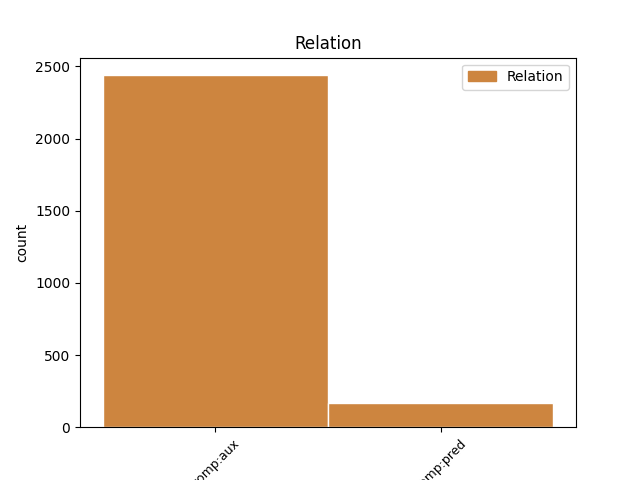
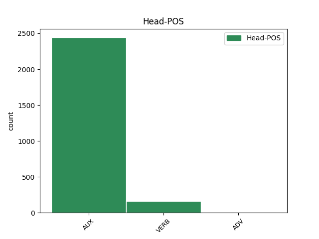
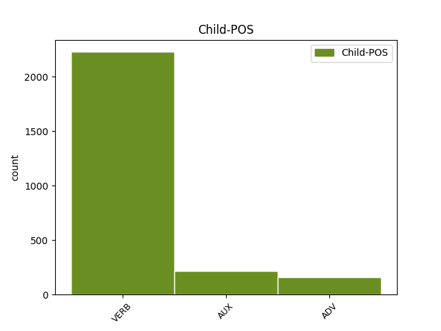

Distribution of features within this leaf



Agreement Rules sorted by frequency.
- When the dependent token is the complement for auxiliary(comp:aux) of the head token,
1 Ako _ _ _ _ 0 _ _ _
2 bi _ _ _ _ 0 _ _ _
3 se _ _ _ _ 0 _ _ _
4 umrežila _ _ _ _ 0 _ _ _
5 državna _ _ _ _ 0 _ _ _
6 infrastruktura _ _ _ _ 0 _ _ _
7 počev _ _ _ _ 0 _ _ _
8 od _ _ _ _ 0 _ _ _
9 uličnih _ _ _ _ 0 _ _ _
10 semafora _ _ _ _ 0 _ _ _
11 pa _ _ _ _ 0 _ _ _
12 sve _ _ _ _ 0 _ _ _
13 do _ _ _ _ 0 _ _ _
14 državnih _ _ _ _ 0 _ _ _
15 bolnica _ _ _ _ 0 _ _ _
16 , _ _ _ _ 0 _ _ _
17 to _ _ _ _ 0 _ _ _
18 bi biti AUX Vaa3s Mood=Cnd|Number=Sing|Person=3|Tense=Past|VerbForm=Fin 0 _ _ _
19 zahtevalo zahtevati VERB Vmp-sn Gender=Neut|Number=Sing|Tense=Past|VerbForm=Part|Voice=Act 18 comp:aux _ _
20 velika _ _ _ _ 0 _ _ _
21 javna _ _ _ _ 0 _ _ _
22 ulaganja _ _ _ _ 0 _ _ _
23 i _ _ _ _ 0 _ _ _
24 visokoobučene _ _ _ _ 0 _ _ _
25 kadrove _ _ _ _ 0 _ _ _
26 za _ _ _ _ 0 _ _ _
27 primenu _ _ _ _ 0 _ _ _
28 takve _ _ _ _ 0 _ _ _
29 tehnologije _ _ _ _ 0 _ _ _
30 , _ _ _ _ 0 _ _ _
31 kao _ _ _ _ 0 _ _ _
32 i _ _ _ _ 0 _ _ _
33 ulaganje _ _ _ _ 0 _ _ _
34 u _ _ _ _ 0 _ _ _
35 maksimalnu _ _ _ _ 0 _ _ _
36 zaštitu _ _ _ _ 0 _ _ _
37 ovakvih _ _ _ _ 0 _ _ _
38 osetljivih _ _ _ _ 0 _ _ _
39 sistema _ _ _ _ 0 _ _ _
40 od _ _ _ _ 0 _ _ _
41 ilegalnih _ _ _ _ 0 _ _ _
42 upada _ _ _ _ 0 _ _ _
43 i _ _ _ _ 0 _ _ _
44 sabotaže _ _ _ _ 0 _ _ _
45 . _ _ _ _ 0 _ _ _
1 Po _ _ _ _ 0 _ _ _
2 običaju _ _ _ _ 0 _ _ _
3 vešto _ _ _ _ 0 _ _ _
4 i _ _ _ _ 0 _ _ _
5 duhovito _ _ _ _ 0 _ _ _
6 koristeći koristiti ADV Rr Tense=Pres|VerbForm=Conv 27 comp:pred _ _
7 obrasce _ _ _ _ 0 _ _ _
8 naracije _ _ _ _ 0 _ _ _
9 iz _ _ _ _ 0 _ _ _
10 tzv. _ _ _ _ 0 _ _ _
11 sapunskih _ _ _ _ 0 _ _ _
12 opera _ _ _ _ 0 _ _ _
13 , _ _ _ _ 0 _ _ _
14 peruanski _ _ _ _ 0 _ _ _
15 nobelovac _ _ _ _ 0 _ _ _
16 , _ _ _ _ 0 _ _ _
17 pomalo _ _ _ _ 0 _ _ _
18 sa _ _ _ _ 0 _ _ _
19 boka _ _ _ _ 0 _ _ _
20 i _ _ _ _ 0 _ _ _
21 sve _ _ _ _ 0 _ _ _
22 u _ _ _ _ 0 _ _ _
23 svemu _ _ _ _ 0 _ _ _
24 nedovoljno _ _ _ _ 0 _ _ _
25 ubedljivo _ _ _ _ 0 _ _ _
26 , _ _ _ _ 0 _ _ _
27 pripoveda pripovedati VERB Vmr3s Mood=Ind|Number=Sing|Person=3|Tense=Pres|VerbForm=Fin 0 _ _ _
28 i _ _ _ _ 0 _ _ _
29 o _ _ _ _ 0 _ _ _
30 Rigobertu _ _ _ _ 0 _ _ _
31 , _ _ _ _ 0 _ _ _
32 njegovom _ _ _ _ 0 _ _ _
33 sinu _ _ _ _ 0 _ _ _
34 Fončitu _ _ _ _ 0 _ _ _
35 i _ _ _ _ 0 _ _ _
36 supruzi _ _ _ _ 0 _ _ _
37 a _ _ _ _ 0 _ _ _
38 Fončitovoj _ _ _ _ 0 _ _ _
39 pomajci _ _ _ _ 0 _ _ _
40 Lukresiji _ _ _ _ 0 _ _ _
41 . _ _ _ _ 0 _ _ _
Disagree Examples:
1 Krivična _ _ _ _ 0 _ _ _
2 presuda _ _ _ _ 0 _ _ _
3 i _ _ _ _ 0 _ _ _
4 zatvorska _ _ _ _ 0 _ _ _
5 kazna _ _ _ _ 0 _ _ _
6 medijskom _ _ _ _ 0 _ _ _
7 mogulu _ _ _ _ 0 _ _ _
8 Veliji _ _ _ _ 0 _ _ _
9 Ramkovskom _ _ _ _ 0 _ _ _
10 , _ _ _ _ 0 _ _ _
11 koji _ _ _ _ 0 _ _ _
12 je biti AUX Var3s Mood=Ind|Number=Sing|Person=3|Tense=Pres|VerbForm=Fin 0 _ _ _
13 često _ _ _ _ 0 _ _ _
14 kritikovao kritikovati VERB Vmp-sm Gender=Masc|Number=Sing|Tense=Past|VerbForm=Part|Voice=Act 12 comp:aux _ _
15 makedonsku _ _ _ _ 0 _ _ _
16 vladu _ _ _ _ 0 _ _ _
17 , _ _ _ _ 0 _ _ _
18 mogla _ _ _ _ 0 _ _ _
19 bi _ _ _ _ 0 _ _ _
20 da _ _ _ _ 0 _ _ _
21 zaplaši _ _ _ _ 0 _ _ _
22 medije _ _ _ _ 0 _ _ _
23 , _ _ _ _ 0 _ _ _
24 kažu _ _ _ _ 0 _ _ _
25 novinari _ _ _ _ 0 _ _ _
26 u _ _ _ _ 0 _ _ _
27 toj _ _ _ _ 0 _ _ _
28 maloj _ _ _ _ 0 _ _ _
29 balkanskoj _ _ _ _ 0 _ _ _
30 državi _ _ _ _ 0 _ _ _
31 . _ _ _ _ 0 _ _ _
1 Ramkovski _ _ _ _ 0 _ _ _
2 , _ _ _ _ 0 _ _ _
3 bivši _ _ _ _ 0 _ _ _
4 vlasnik _ _ _ _ 0 _ _ _
5 televizijske _ _ _ _ 0 _ _ _
6 stanice _ _ _ _ 0 _ _ _
7 A1 _ _ _ _ 0 _ _ _
8 , _ _ _ _ 0 _ _ _
9 četiri _ _ _ _ 0 _ _ _
10 novine _ _ _ _ 0 _ _ _
11 i _ _ _ _ 0 _ _ _
12 drugih _ _ _ _ 0 _ _ _
13 preduzeća _ _ _ _ 0 _ _ _
14 , _ _ _ _ 0 _ _ _
15 osuđen _ _ _ _ 0 _ _ _
16 je _ _ _ _ 0 _ _ _
17 u _ _ _ _ 0 _ _ _
18 krivičnom _ _ _ _ 0 _ _ _
19 sudu _ _ _ _ 0 _ _ _
20 u _ _ _ _ 0 _ _ _
21 Skoplju _ _ _ _ 0 _ _ _
22 14. _ _ _ _ 0 _ _ _
23 marta _ _ _ _ 0 _ _ _
24 na _ _ _ _ 0 _ _ _
25 13 _ _ _ _ 0 _ _ _
26 godina _ _ _ _ 0 _ _ _
27 zatvora _ _ _ _ 0 _ _ _
28 , _ _ _ _ 0 _ _ _
29 zbog _ _ _ _ 0 _ _ _
30 pranja _ _ _ _ 0 _ _ _
31 novca _ _ _ _ 0 _ _ _
32 , _ _ _ _ 0 _ _ _
33 kriminalne _ _ _ _ 0 _ _ _
34 zavere _ _ _ _ 0 _ _ _
35 , _ _ _ _ 0 _ _ _
36 zloupotrebe _ _ _ _ 0 _ _ _
37 položaja _ _ _ _ 0 _ _ _
38 i _ _ _ _ 0 _ _ _
39 utaje _ _ _ _ 0 _ _ _
40 poreza _ _ _ _ 0 _ _ _
41 ; _ _ _ _ 0 _ _ _
42 19 _ _ _ _ 0 _ _ _
43 saučesnika _ _ _ _ 0 _ _ _
44 dobilo dobiti VERB Vmp-sn Gender=Neut|Number=Sing|Tense=Past|VerbForm=Part|Voice=Act 45 comp:aux _ _
45 je biti AUX Var3s Mood=Ind|Number=Sing|Person=3|Tense=Pres|VerbForm=Fin 0 _ _ _
46 zatvorske _ _ _ _ 0 _ _ _
47 kazne _ _ _ _ 0 _ _ _
48 u _ _ _ _ 0 _ _ _
49 trajanju _ _ _ _ 0 _ _ _
50 dve _ _ _ _ 0 _ _ _
51 do _ _ _ _ 0 _ _ _
52 sedam _ _ _ _ 0 _ _ _
53 godina _ _ _ _ 0 _ _ _
54 . _ _ _ _ 0 _ _ _
1 A1 _ _ _ _ 0 _ _ _
2 TV _ _ _ _ 0 _ _ _
3 i _ _ _ _ 0 _ _ _
4 četiri _ _ _ _ 0 _ _ _
5 novine _ _ _ _ 0 _ _ _
6 zatvoreni _ _ _ _ 0 _ _ _
7 su _ _ _ _ 0 _ _ _
8 zato _ _ _ _ 0 _ _ _
9 što _ _ _ _ 0 _ _ _
10 nisu biti AUX Var3p Mood=Ind|Number=Plur|Person=3|Polarity=Neg|Tense=Pres|VerbForm=Fin 0 _ _ _
11 plaćali plaćati VERB Vmp-pm Gender=Masc|Number=Plur|Tense=Past|VerbForm=Part|Voice=Act 10 comp:aux _ _
12 porez _ _ _ _ 0 _ _ _
13 , _ _ _ _ 0 _ _ _
14 niti _ _ _ _ 0 _ _ _
15 ispunjavali _ _ _ _ 0 _ _ _
16 obaveze _ _ _ _ 0 _ _ _
17 prema _ _ _ _ 0 _ _ _
18 kreditorima _ _ _ _ 0 _ _ _
19 . _ _ _ _ 0 _ _ _
1 Neki _ _ _ _ 0 _ _ _
2 novinari _ _ _ _ 0 _ _ _
3 , _ _ _ _ 0 _ _ _
4 a _ _ _ _ 0 _ _ _
5 posebno _ _ _ _ 0 _ _ _
6 bivši _ _ _ _ 0 _ _ _
7 zaposleni _ _ _ _ 0 _ _ _
8 u _ _ _ _ 0 _ _ _
9 A1 _ _ _ _ 0 _ _ _
10 TV _ _ _ _ 0 _ _ _
11 , _ _ _ _ 0 _ _ _
12 tvrde _ _ _ _ 0 _ _ _
13 da _ _ _ _ 0 _ _ _
14 taj _ _ _ _ 0 _ _ _
15 slučaj _ _ _ _ 0 _ _ _
16 , _ _ _ _ 0 _ _ _
17 pod _ _ _ _ 0 _ _ _
18 nazivom _ _ _ _ 0 _ _ _
19 " _ _ _ _ 0 _ _ _
20 Paukova _ _ _ _ 0 _ _ _
21 mreža _ _ _ _ 0 _ _ _
22 " _ _ _ _ 0 _ _ _
23 , _ _ _ _ 0 _ _ _
24 predstavlja _ _ _ _ 0 _ _ _
25 borbu _ _ _ _ 0 _ _ _
26 između _ _ _ _ 0 _ _ _
27 vlade _ _ _ _ 0 _ _ _
28 i _ _ _ _ 0 _ _ _
29 tada _ _ _ _ 0 _ _ _
30 najmoćnije _ _ _ _ 0 _ _ _
31 TV _ _ _ _ 0 _ _ _
32 stanice _ _ _ _ 0 _ _ _
33 u _ _ _ _ 0 _ _ _
34 Makedoniji _ _ _ _ 0 _ _ _
35 , _ _ _ _ 0 _ _ _
36 koja _ _ _ _ 0 _ _ _
37 je biti AUX Var3s Mood=Ind|Number=Sing|Person=3|Tense=Pres|VerbForm=Fin 0 _ _ _
38 kritikovala kritikovati VERB Vmp-sf Gender=Fem|Number=Sing|Tense=Past|VerbForm=Part|Voice=Act 37 comp:aux _ _
39 njenu _ _ _ _ 0 _ _ _
40 politiku _ _ _ _ 0 _ _ _
41 i _ _ _ _ 0 _ _ _
42 podržavala _ _ _ _ 0 _ _ _
43 opoziciju _ _ _ _ 0 _ _ _
44 . _ _ _ _ 0 _ _ _
1 Njegov _ _ _ _ 0 _ _ _
2 cilj _ _ _ _ 0 _ _ _
3 , _ _ _ _ 0 _ _ _
4 a _ _ _ _ 0 _ _ _
5 danas _ _ _ _ 0 _ _ _
6 se _ _ _ _ 0 _ _ _
7 to _ _ _ _ 0 _ _ _
8 i _ _ _ _ 0 _ _ _
9 pokazalo _ _ _ _ 0 _ _ _
10 , _ _ _ _ 0 _ _ _
11 bio biti AUX Vap-sm Gender=Masc|Number=Sing|Tense=Past|VerbForm=Part|Voice=Act 12 comp:aux _ _
12 je biti AUX Var3s Mood=Ind|Number=Sing|Person=3|Tense=Pres|VerbForm=Fin 0 _ _ _
13 da _ _ _ _ 0 _ _ _
14 ućutka _ _ _ _ 0 _ _ _
15 A1 _ _ _ _ 0 _ _ _
16 TV _ _ _ _ 0 _ _ _
17 i _ _ _ _ 0 _ _ _
18 Veliju _ _ _ _ 0 _ _ _
19 Ramkovskog _ _ _ _ 0 _ _ _
20 , _ _ _ _ 0 _ _ _
21 kao _ _ _ _ 0 _ _ _
22 nosioce _ _ _ _ 0 _ _ _
23 borbe _ _ _ _ 0 _ _ _
24 protiv _ _ _ _ 0 _ _ _
25 diktature _ _ _ _ 0 _ _ _
26 [ _ _ _ _ 0 _ _ _
27 premijera _ _ _ _ 0 _ _ _
28 ] _ _ _ _ 0 _ _ _
29 Nikole _ _ _ _ 0 _ _ _
30 Gruevskog _ _ _ _ 0 _ _ _
31 " _ _ _ _ 0 _ _ _
32 , _ _ _ _ 0 _ _ _
33 kaže _ _ _ _ 0 _ _ _
34 bivši _ _ _ _ 0 _ _ _
35 urednik _ _ _ _ 0 _ _ _
36 A1 _ _ _ _ 0 _ _ _
37 TV _ _ _ _ 0 _ _ _
38 i _ _ _ _ 0 _ _ _
39 poslanik _ _ _ _ 0 _ _ _
40 opozicione _ _ _ _ 0 _ _ _
41 Sandžačke _ _ _ _ 0 _ _ _
42 lige _ _ _ _ 0 _ _ _
43 Safet _ _ _ _ 0 _ _ _
44 Biševac _ _ _ _ 0 _ _ _
45 . _ _ _ _ 0 _ _ _